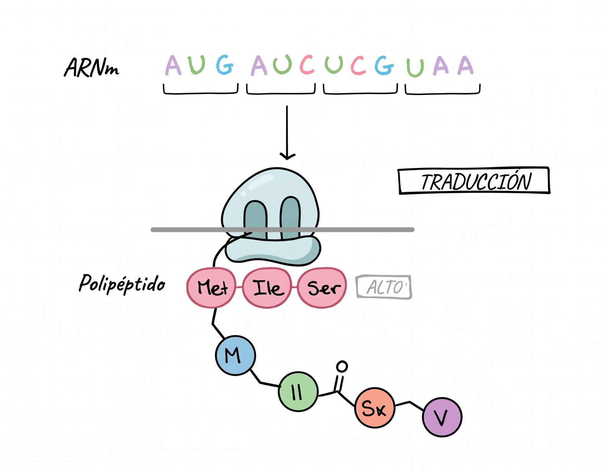

Traducción del ARNm: Fundamento Teórico y Transformación de Cadenas
La traducción es la etapa culminante de la expresión génica según el Dogma Central, en la cual la secuencia de ribonucleótidos del ARN mensajero (ARNm) se decodifica en los ribosomas para ensamblar una secuencia lineal de aminoácidos (cadena polipeptídica o proteína).

1. Contexto Teórico
Principios Biológicos Clave
- Lectura por Tripletes (Codones): La información del ARNm se lee de 3 en 3 nucleótidos de forma continua, no solapante y sin signos de puntuación, en dirección \(5' \to 3'\).
- Direccionalidad Peptídica: La síntesis de la proteína se efectúa estrictamente desde el extremo Amino-terminal (\(N\text{-terminal}\)) hacia el extremo Carboxilo-terminal (\(C\text{-terminal}\)).
- El Código Genético Universal:
- 64 codones posibles (\(4^3\)), de los cuales 61 codifican aminoácidos y 3 son codones de parada (Stop).
- Codón de Inicio Universal:
AUG, que codifica para Metionina (Met) y define el marco abierto de lectura (Open Reading Frame - ORF). - Codones de Parada (Stop):
UAA,UAGyUGA, que provocan el fin de la traducción. - Degenerado o redundante: Varios codones pueden codificar para el mismo aminoácido.
- Acoplamiento Codón-Anticodón: Las moléculas de ARN de transferencia (ARNt) actúan como adaptadores moleculares portando un aminoácido en su extremo \(3'\) y un anticodón complementario y antiparalelo (\(3' \to 5'\)) que reconoce el codón del ARNm (\(5' \to 3'\)).
ARNm (5'→3') : 5'- A U G -3' (Codón de Inicio)
| | | (Apareamiento antiparalelo)
ARNt Anticodón : 3'- U A C -5' (Met-ARNt)
\___________/
Aminoácido cargado : [ Metionina ] --> Extremo N-terminal de la proteína
Dinámica de los Sitios Ribosomales
| Sitio Ribosomal | Nombre Biológico | Función Molecular |
|---|---|---|
| Sitio A | Aminoacilo (Aminoacyl) | Recepción del nuevo aminoacil-ARNt según el codón expuesto. |
| Sitio P | Peptidilo (Peptidyl) | Retención del peptidil-ARNt y catálisis del enlace peptídico por la peptidil transferasa. |
| Sitio E | Salida (Exit) | Expulsión del ARNt desacilado tras la translocación del ribosoma. |
2. Desglose de Transformación de Cadenas en traduccion.py
A continuación se detalla exclusivamente la lógica de manipulación de cadenas implementada en traduccion.py.
Paso 1: Definición de la Tabla del Código Genético y Mapeo Antiparalelo
Para decodificar secuencias de ARN, el módulo define el código genético completo y las reglas de complementariedad de ribonucleótidos:
# Mapeo del código genético universal: codon -> (codigo_3, codigo_1, nombre, propiedad)
TABLA_CODIGO_GENETICO = {
'AUG': ('Met', 'M', 'Metionina (INICIO)', 'Apolar / Inicio universal'),
'UUU': ('Phe', 'F', 'Fenilalanina', 'Apolar / Hidrófobo'),
'UAA': ('STOP', '*', 'Codón de Parada (Ocre)', 'Señal de Terminación'),
'UAG': ('STOP', '*', 'Codón de Parada (Ámbar)', 'Señal de Terminación'),
'UGA': ('STOP', '*', 'Codón de Parada (Ópalo)', 'Señal de Terminación'),
# ... total de 64 codones
}
# Reglas de complementariedad entre ARN mensajero y ARN de transferencia
COMPLEMENTO_ARN = {
'A': 'U', 'U': 'A',
'C': 'G', 'G': 'C'
}
Explicación:
Cada triplete posible de nucleótidos de ARNm se asocia en \(O(1)\) con su aminoácido correspondiente en nomenclatura de 3 letras, 1 letra y propiedades químicas. A su vez, COMPLEMENTO_ARN define la interacción entre ribonucleótidos (\(A=U\) y \(C \equiv G\)) requerida para deducir el anticodón del ARNt.
[ Triplete ARNm (5'->3') ] [ Decodificación a Aminoácido ]
AUG =======> Met (M) [Inicio]
GCC =======> Ala (A) [Apolar]
AAC =======> Asn (N) [Polar neutro]
UAA / UAG / UGA =======> STOP (*) [Terminación]
Paso 2: Generación del Anticodón Antiparalelo del ARNt
La interacción entre el codón expuesto en el ribosoma y el ARNt adaptador exige calcular la secuencia antiparalela del anticodón:
def obtener_anticodon(codon: str) -> str:
"""
Obtiene el anticodón de ARNt antiparalelo (3' -> 5') correspondiente al codón (5' -> 3').
Ejemplo: Codón 5'-AUG-3' -> Anticodón 3'-UAC-5'.
"""
return "".join(COMPLEMENTO_ARN.get(b, 'N') for b in codon)
Explicación:
La función recibe una subcadena de tres caracteres correspondiente a un codón (\(5' \to 3'\)) y la transforma base a base en su secuencia complementaria. Esta cadena resultante representa el anticodón leído en sentido \(3' \to 5'\), garantizando el apareamiento antiparalelo exacto dentro del ribosoma.
Codón ARNm (5'->3') : 5'- A U G -3'
| | | (Complementariedad de ARN)
Anticodón ARNt (3'->5') : 3'- U A C -5'
\_______________/
Met-ARNt cargado
Paso 3: Identificación del Marco Abierto de Lectura (Búsqueda de AUG)
Antes de traducir de tres en tres nucleótidos, el algoritmo debe descartar la región no traducida (\(5'\text{-UTR}\)) y fijar el marco de lectura en el primer triplete AUG:
arnm = arnm_5_3.upper().strip()
indice_inicio = arnm.find("AUG")
if indice_inicio != -1:
arn_5_utr = arnm[:indice_inicio]
arn_orf = arnm[indice_inicio:]
Explicación:
arnm.find("AUG") localiza el índice de la primera ocurrencia de la señal de inicio de traducción. Mediante slicing, la cadena se subdivide en dos tramos: arn_5_utr, que abarca los nucleótidos previos al inicio que el ribosoma escanea sin traducir, y arn_orf, que constituye el marco abierto de lectura a procesar.
Cadena ARNm: 5'- G G A C U [ A U G ] C G A U C U A G -3'
\___________/ \___________________________________/
5'-UTR Marco Abierto de Lectura (ORF)
(No traducido) (Inicia traducción aquí)
Paso 4: Bucle de Elongación y Detección de Codones de Parada
Una vez establecido el marco de lectura, el algoritmo itera en ventanas discretas de 3 nucleótidos hasta encontrar una señal de término o el final de la cadena:
i = indice_inicio
aminoacidos_3 = []
aminoacidos_1 = []
while i + 3 <= len(arnm):
triplete = arnm[i:i+3]
info_aa = TABLA_CODIGO_GENETICO.get(triplete, ('???', '?', 'Desconocido', 'Desconocido'))
codigo_3, codigo_1, nombre, propiedad = info_aa
anticodon = obtener_anticodon(triplete)
if codigo_3 == 'STOP':
codon_stop_encontrado = True
break
aminoacidos_3.append(codigo_3)
aminoacidos_1.append(codigo_1)
i += 3
Explicación:
El puntero i avanza en saltos de 3 posiciones (i += 3), simulando la translocación del ribosoma. Para cada triplete, consulta TABLA_CODIGO_GENETICO. Si el triplete corresponde a uno de los tres codones de parada (STOP), el bucle se interrumpe inmediatamente emulando la acción de los factores de liberación. De lo contrario, almacena el aminoácido en las listas acumuladoras.
Ciclo 1 (i=0) : 5'-[AUG]-3' --> Met (M) --> Anticodón 3'-UAC-5'
Ciclo 2 (i=3) : 5'-[CGA]-3' --> Arg (R) --> Anticodón 3'-GCU-5'
Ciclo 3 (i=6) : 5'-[UCG]-3' --> Ser (S) --> Anticodón 3'-AGC-5'
Ciclo 4 (i=9) : 5'-[UAG]-3' --> STOP --> ¡Fin de traducción! (Break)
Paso 5: Ensamblaje de la Cadena Polipeptídica Final
Finalizada la lectura de codones, las listas de aminoácidos se unen para conformar la representación química de la proteína:
# Polipéptido formal con extremos Amino y Carboxilo terminales
cadena_proteica = f"H2N- {' - '.join(aminoacidos_3)} -COOH" if aminoacidos_3 else "Cadena vacía"
# Secuencia condensada en notación de una letra (estándar FASTA)
secuencia_fasta = "".join(aminoacidos_1)
Explicación:
Se generan dos cadenas de salida: cadena_proteica, que concatena los códigos de 3 letras mediante enlaces tipo - respetando los extremos terminales biológicos (\(\text{H}_2\text{N}-\) en el extremo \(5'\) del ARNm y \(-\text{COOH}\) en el extremo \(3'\)), y secuencia_fasta, que condensa los monómeros en una sola cadena de texto alfanumérico según el estándar bioinformático internacional.